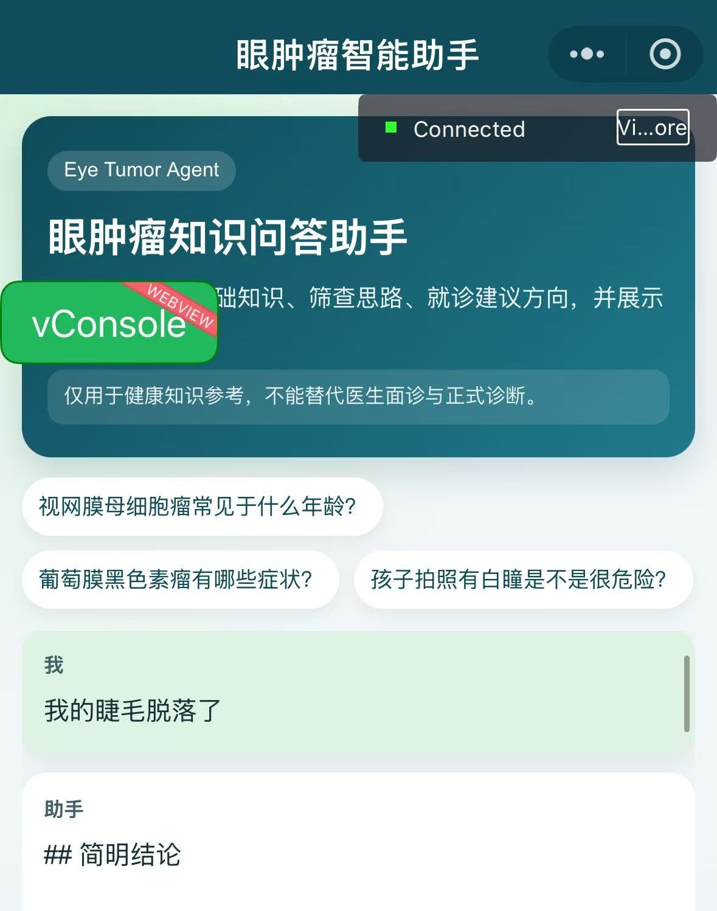
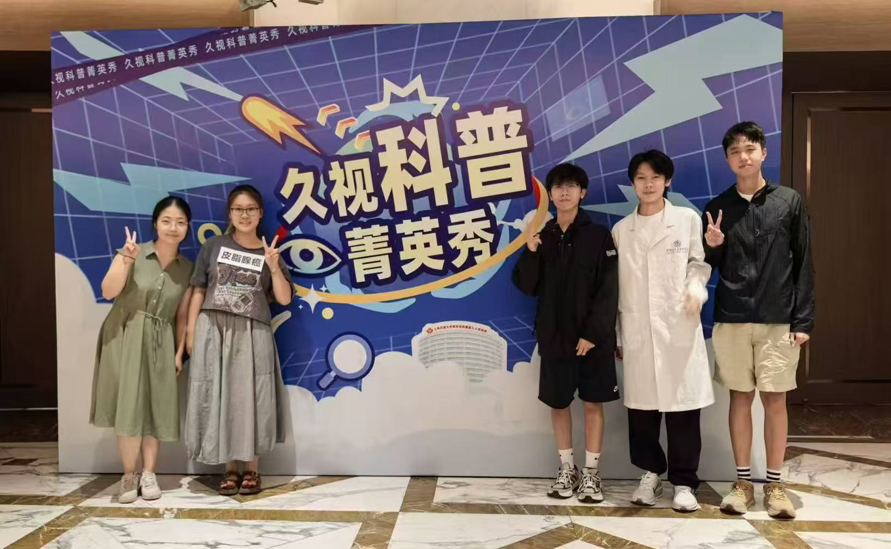
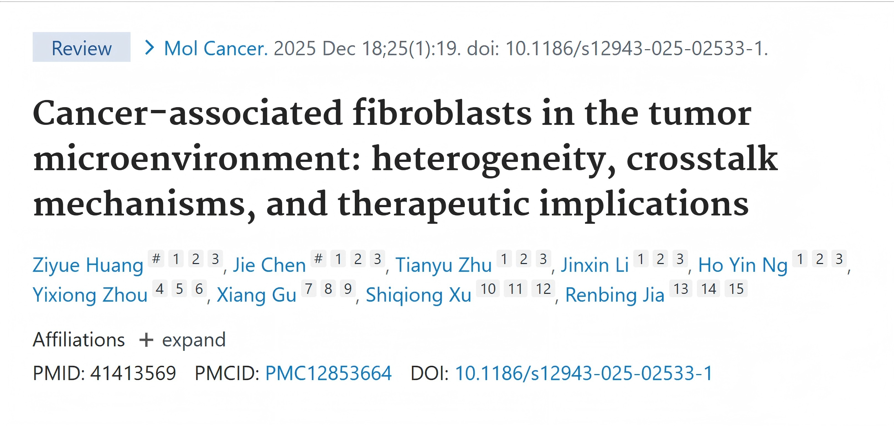
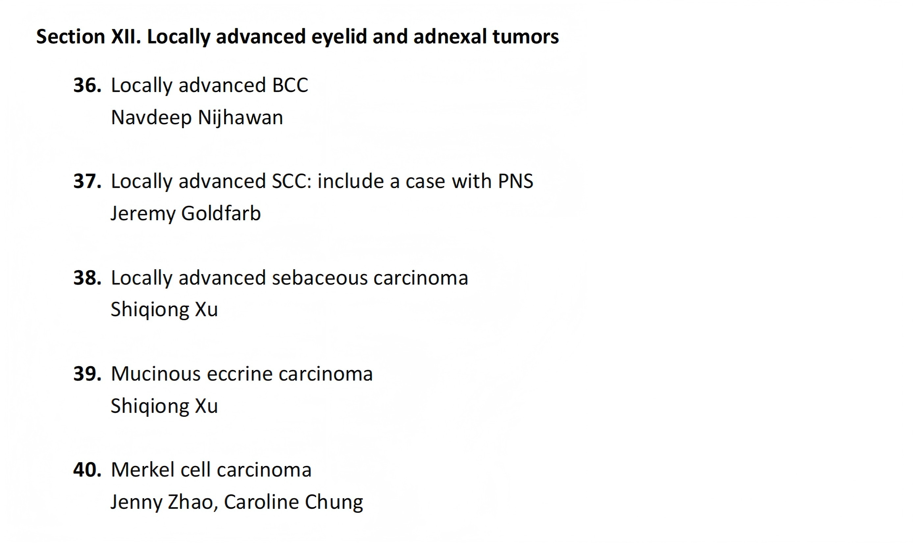
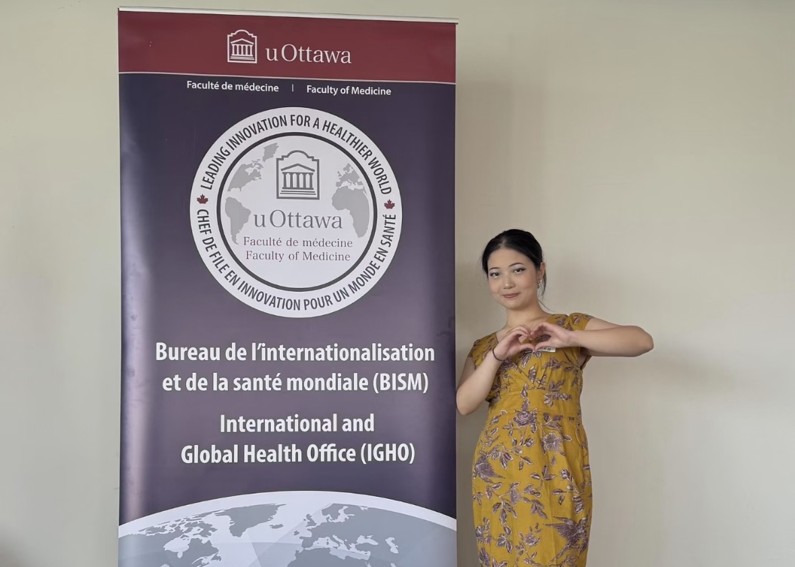
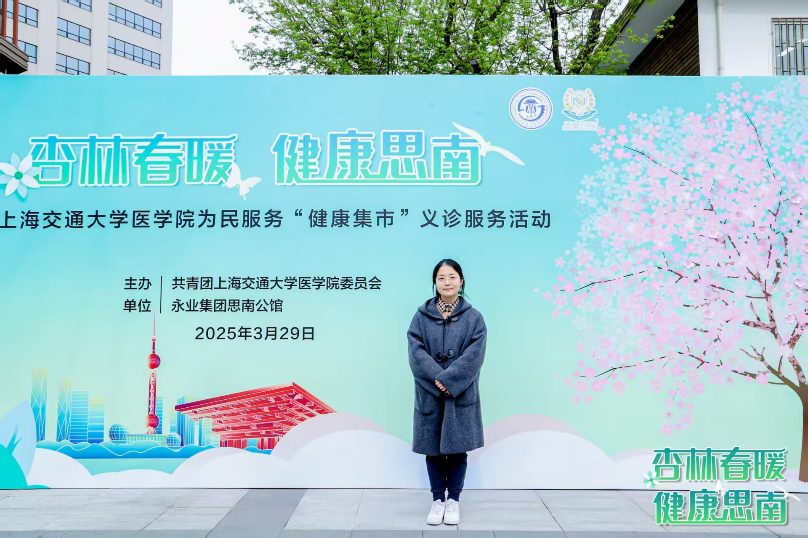
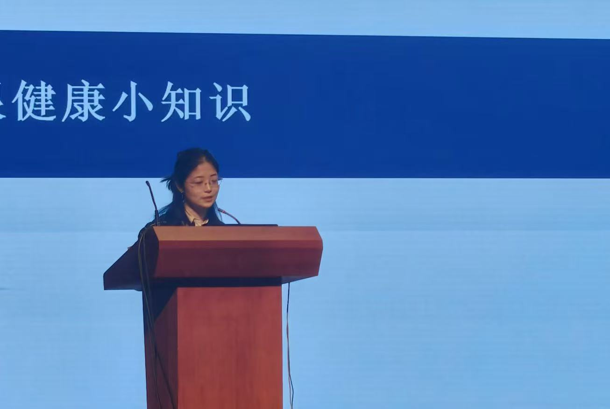
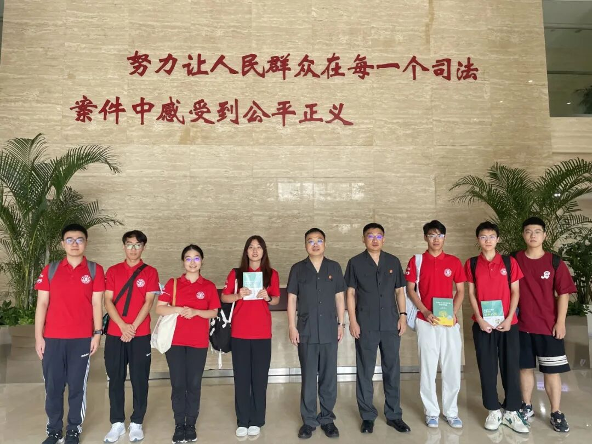
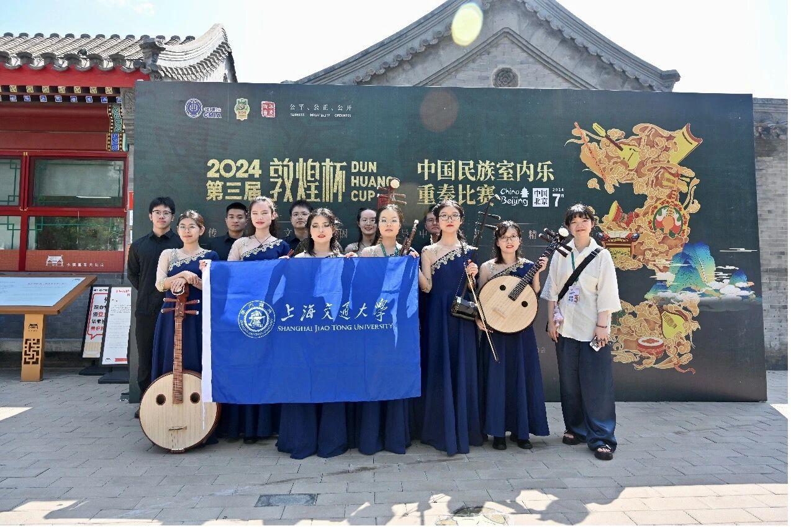

这是我的个人网站
一名
斜杠医学生
的成长史
你好，我是李金昕，我总有很多奇思妙想。
初高中的文科生→大学的医学生+“艺术生”→未来的？
现在聚焦：
Profile / 个人介绍
李金昕 | 22岁 | 热爱探索，喜欢尝试
更直观地认识我……
Projects / 项目经历

-结合项目组开发的AI模型，了解AI诊断方法设计以及初步结果。
-结合问卷与SQL，建立健康促进成效评价体系，探索健康促进模式。
-学习PRD写作，将想法落地成为可执行、可写作、可迭代的方案。
-跟随导师门诊，通过shadowing了解临床一线情况。

自主搭建了一个面向眼肿瘤知识问答场景的应用模型。
-包含微信小程序前端、H5 网页端和 Node.js 后端的整体搭建。
-提问后由后端先联网检索权威医学资料，再调用大模型生成中文回答，并将来源链接和风险提示一并返回展示。
-模型系统支持本地 mock 和真实联网模式切换，目前展示的是H5网页版，小程序仍在真机测试与上线阶段。

进行科普摆摊，制作与眼肿瘤相关的科普视频（情景剧+动画），进行科普宣传，并入选摇篮计划“乔木项目”。

发表在Molecular Cancer，探讨肿瘤微环境中癌相关成纤维细胞（CAFs）的类型、相互作用、治疗效用。

涉及Locally Advanced Sebaceous Carcinoma与Mucinous eccrine carcinoma，主要包括病种的亚型、分期、预后、诊断与治疗方式，以及illustrative cases。

渥太华大学与上海交大医学院联合的医学教育遴选项目，大三暑假将前往渥太华大学医学院进行临床实习。
Practice / 社会实践

讲座包括有眼肿瘤的概念、恶性眼肿瘤的类型区分和人们应当重视的预防措施，礼堂内听众们在问答环节积极主动参与讨论。我还很荣幸地拿到了校方赠送的纪念品和感谢信~

与师姐们、组员们一起，在复兴公园摆摊义诊，为来往市民发放宣传手册，向市民朋友普及眼健康概念与早诊早治的重要性。

回到母校市西中学，面向高中的同学们宣讲眼健康与眼保健的重要性，并鼓励同学们更进一步探索相关知识。

随上海交通大学民乐团为上海市第五人民医院肾内科的患者们表演了耳熟能详的民族音乐，为肾友们带来快乐。

随上海交通大学大学法学院实践团队来到上海市长宁区人民法院少年法庭调研，和顾薛磊法官与于鹏副庭长深入探讨了“少年犯规制现状及预防未成年人犯罪”这一课题，还参观了很有特色的心理咨询室和少年法庭。
Interest / 音乐爱好
在音乐会中表演爵士民族室内乐Fly me to the Moon（首演），感受了爵士与民乐的碰撞。
演出现场视频与解读 →负责民族室内乐《千里》的扬琴声部。《千里》是我很喜欢的一首室内乐，很开心能在跨年晚会演出！
演出现场视频 →
负责wood block声部，获得了作为评委的王建民老师的充分认可和鼓励，室内乐团也作为“敦煌杯”非职业青年组冠军队伍，受邀参加了第五届北京国乐节开幕式暨敦煌杯室内乐重奏、合奏比赛华彩集锦音乐会。
Contact / 联系方式
留言板